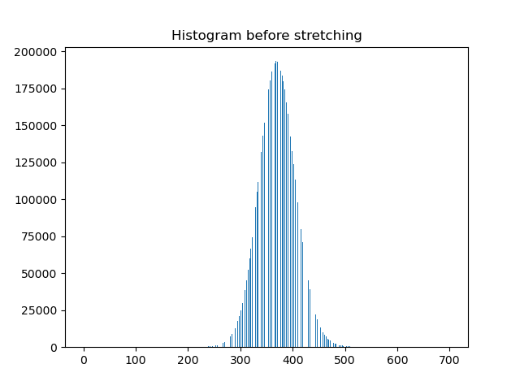
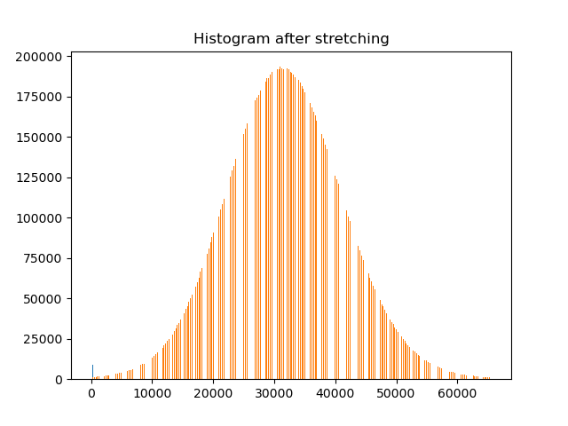

Normalizes and stretches the histogram of the given grayscale image. Removes outliers if the threshold is provided.
stretch_histogram(image, [outlier_threshold])| image | AdornedImage | Input image. |
| outlier_threshold | float | Threshold for outlier filtering. The value must be in (0.5, 1) interval. If None, no filtering is used. Default value is 0.999. |
| AdornedImage | Image with the stretched histogram. |
The histogram is stretched to cover the entire range of the bit depth. Images with signed data types are stretched to the negative values. Non-grey scale images are not supported. The function returns a copy of the image, the original object is not changed.
The outlier filtering algorithm calculates the histogram of the image. For each bin of the histogram, it calculates the ratio of the counts to the total number of pixels. The ratios are then cumulatively summed from the both sides of the histogram. After the threshold is reached, the algorithm stops and a new minimum/maximum is found.


The following example shows how to stretch the histogram of an image and save it to disk as a bmp file:
# Acquire a full frame image
image = microscope.acquisition.acquire_camera_image(CameraType.BM_CETA, ImageSize.PRESET_4096, 1)
# Stretch the histogram of the image without outlier filering
stretched_image = vision_toolkit.stretch_histogram(image, outlier_threshold=None)
# Save the image to disk
stretched_image.save(r"C:\ceta_image.bmp")
# Stretch the histogram of the image with outlier filering
stretched_image = vision_toolkit.stretch_histogram(image)
# Save the image to disk
stretched_image.save(r"C:\ceta_filtered_image.bmp")